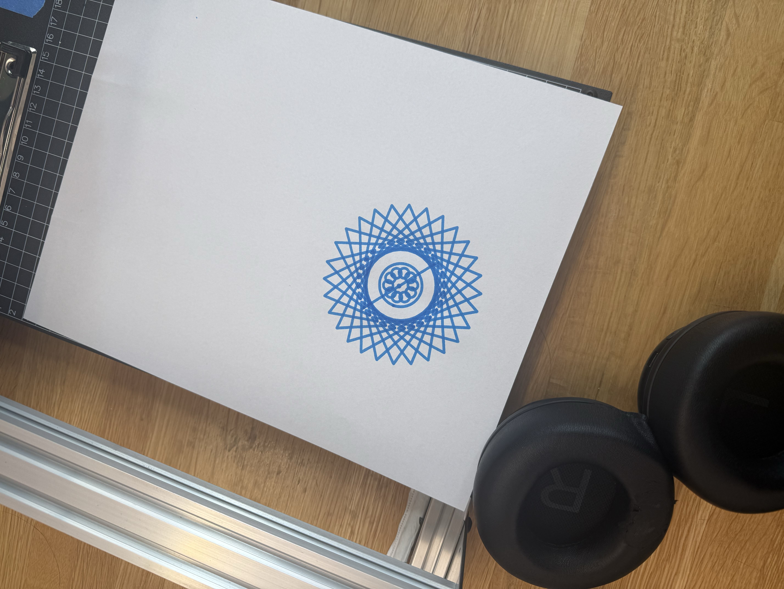

Brief description of my drawing:
My drawing overlays polar ellipses, lines, and heptagons. My intent
was to almost imitate a compass, in its composition. When you click
and drag, the visual becomes saturated with changing color.
What are the main iterative processes of your drawing?
I utilised function mousePressed(), mouseDragged(), and keyPressed()
to achieve various movements or changes. While the first caused a
different visual design to be presented at the click of a mouse,
the second caused the polar commands to spin and interact along with
activating the color changing effect. The last, allowed for the visual
to be saved at the click of the s key on one's keyboard.
Discuss your experiences with the pen plotter this week.
The pen plotter was fun to use! I had never interacted with one before
this class. I liked how accurate to the visual it was, but did not enjoy how
slow it ran or having to figure out what height to place the marker in
relation to the platform and my paper by myself.
What do you hope to accomplish/explore during your next drawing?
I hope to have more control in my design. Here, I stripped down a work
I had done before and tried out some different things with the commands and
functions. I hope to have more control in the artistic process next time.
However, maybe this offers a lesson in the beauty of having a lack of control
in art and design. Just as this process has been full of surprises.
Photo of my plotted work:
